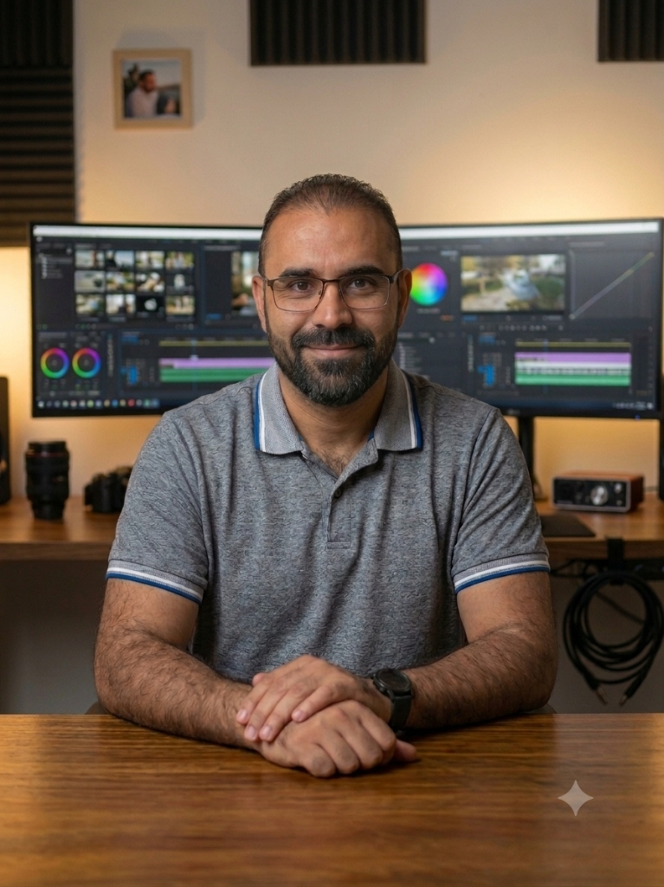

SISTEMAS & HARDWARE • SERVICIO TÉCNICO A COMPUTADORAS • ATENCIÓN AL CLIENTE • IA & MEDIOS

Ingeniero en Sistemas Computacionales • Servicio Técnico & Hardware
GIBRAN SAMUEL VILLA FRANCO
Ingeniero en Sistemas Computacionales (UACH, Opción Hardware). Especialista en: 1) Servicio técnico a computadoras (ensamble, desensamble, diagnóstico de hardware y mantenimiento preventivo/correctivo); 2) Atención directa y personalizada al cliente (asesoría técnica y resolución ágil de requerimientos); y 3) Desarrollo de aplicaciones y optimización de procesos utilizando Inteligencia Artificial.
614-304-2608
linkedin.com/in/gibran-villa
samf3212@gmail.com
Chihuahua, Chih., México
Inglés C1 Advanced (90%)
🇨🇳 Chino Mandarín (HSK 1 - +600 días)